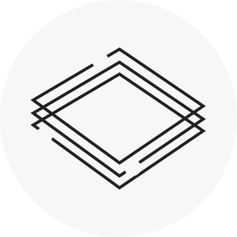
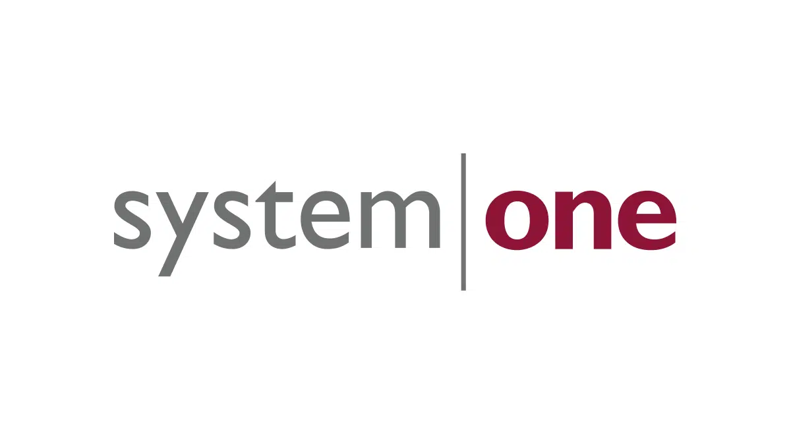

Jr UX Designer
Company: Triveous (Remote)
View Job Listing
This Jr UX Designer role at Triveous feels like a great fit for the kind of work I want to do early in my career. The listing focuses on creating user journeys, personas, and prototypes, which lines up with the skills I’m practicing in my UX and design classes. I also like that the team is remote and cross-functional because I enjoy collaborating with developers and product people, not just other designers. The role talks about taking ownership of parts of the design process, which would push me to be more confident and independent while still having support. Overall, it seems like the right mix of guidance and responsibility for a junior designer.

UX Researcher & Design Strategist
Company: System One – Farmers Branch, TX
View Job Listing
I’m drawn to this UX Researcher & Design Strategist position at System One because it blendsresearch, design, and strategy in one role. The description talks about planning studies, collaborating with product teams, and using findings to shape the roadmap, which matches my interest in understanding people and connecting that to real design decisions. I like that the job mentions flexible and remote-friendly work, because I’ve learned I do my best thinking when I can control my workspace. It would also challenge me to communicate insights clearly to different audiences, not just designers. This role feels like a natural path if I want to lean more into UX research while still staying connected to the design process.
UI/UX Designer
Company: Two95 International Inc. – Dallas, TX
View Job Listing
This UI/UX Designer role at Two95 International interests me because it combines visual design with real user problems. The listing talks about gathering and evaluating user requirements with product managers and engineers, which would help me strengthen my communication and discovery skills. I like that the job involves designing actual interface elements such as menus, tabs, and widgets, because I enjoy working on layouts, hierarchy, and small interaction details. It also mentions using storyboards and flows, which connects directly to the way I’ve been taught to think through user journeys in my classes. Overall, this job seems like a strong match for my mix of visual design skills and growing UX knowledge.